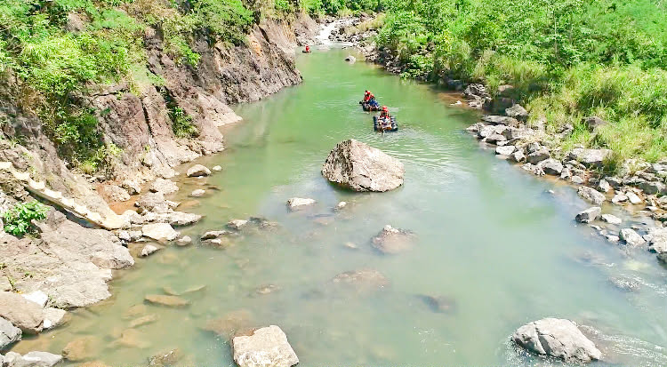
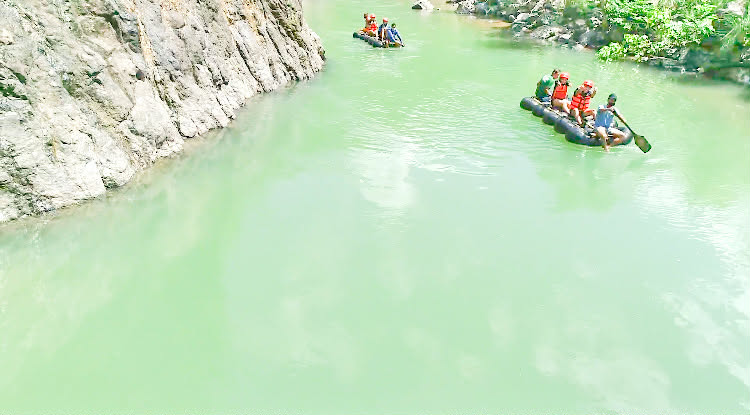
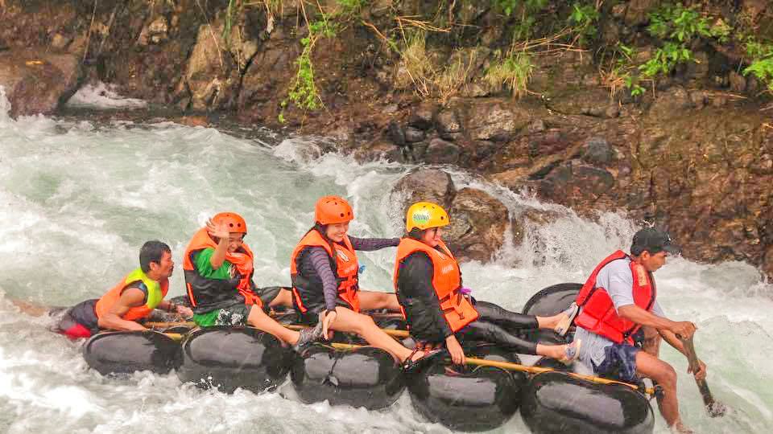
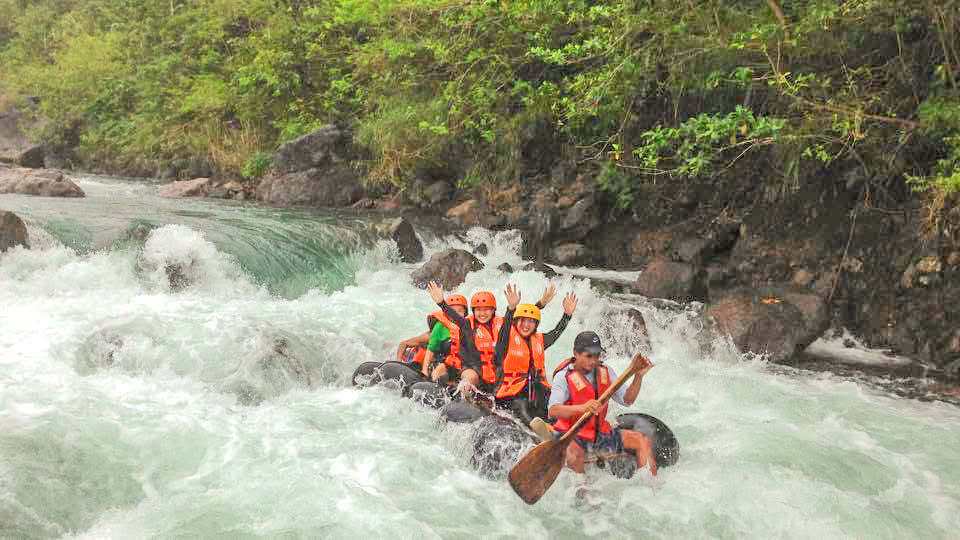

Overview
Tanauan River offers adventure and relaxation with gentle rapids for tubing, natural swimming areas, and picturesque riverside scenery.
Natural river in Real, Quezon for river tubing, swimming, and riverside picnics, surrounded by lush forest and rural landscapes.

Tanauan River offers adventure and relaxation with gentle rapids for tubing, natural swimming areas, and picturesque riverside scenery.

Located in Brgy. Tanauan, Real, Quezon. Accessible by vehicle from Real town. Local guides can assist visitors with river tubing access.

A flowing river amidst forested and rural landscapes, offering a refreshing and adventurous environment for tourists and nature lovers.
